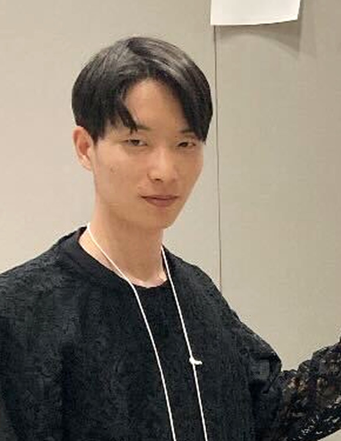

横山 健 (Yokoyama Ken)
九州大学大学院 システム情報科学府情報理工学専攻 指導教員：木村 慧
博士課程
研究分野
- 離散凸解析
- オンライン最適化
連絡先
〒819-0395 福岡県福岡市西区元岡744九州大学伊都キャンパスウエスト2号館825号
メール：yokoyama[at]agent.inf.kyushu-u.ac.jp

九州大学大学院 システム情報科学府情報理工学専攻 指導教員：木村 慧
博士課程
〒819-0395 福岡県福岡市西区元岡744九州大学伊都キャンパスウエスト2号館825号
メール：yokoyama[at]agent.inf.kyushu-u.ac.jp